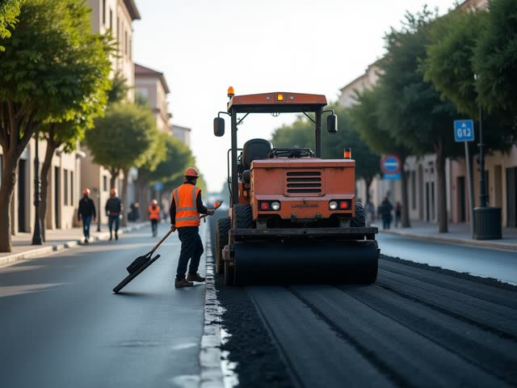
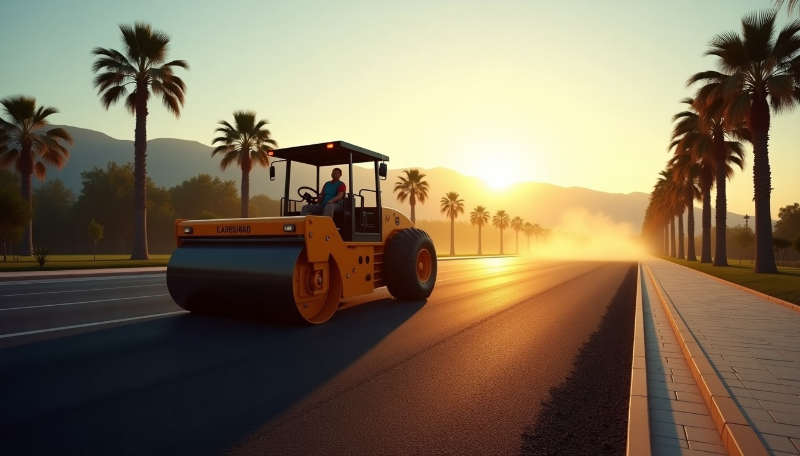
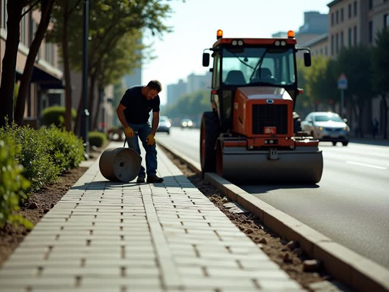
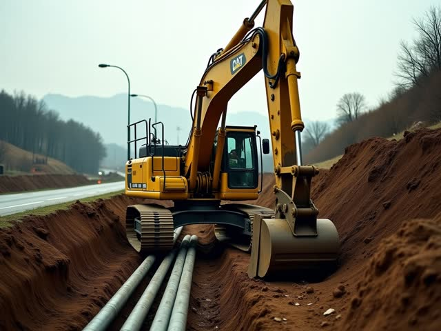
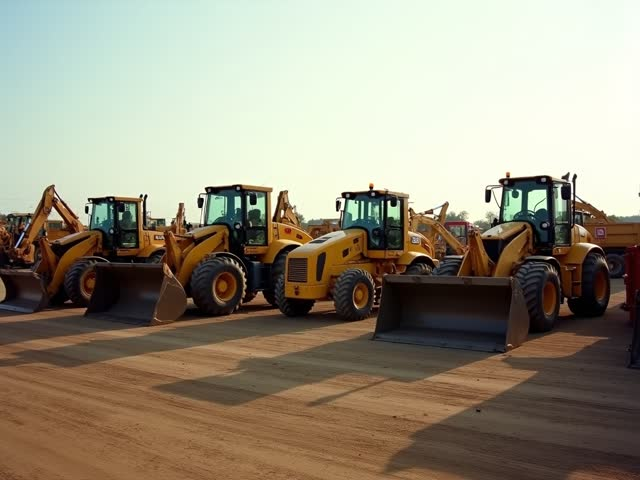
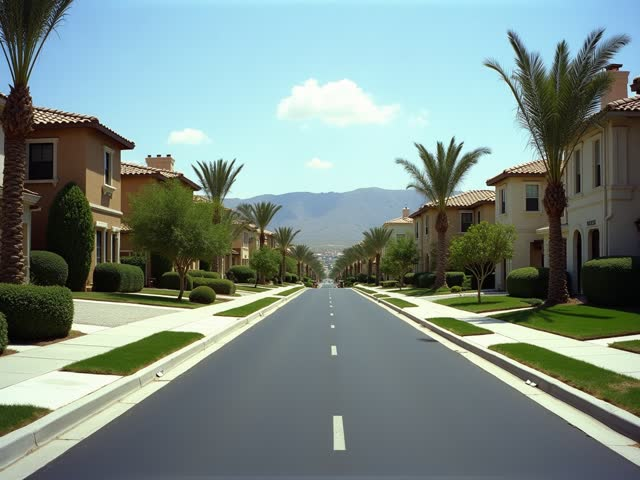

Asfalt
Site içi yol, otopark, yama, kazıma

Asfalt, parke, altyapı ve operatörlü iş makinesi kiralama. Müsait makineyi görün, kiralama teklifini anında alın.
Temsilî hizmet listesi; kendi hizmetleriniz, makine parkınız ve fotoğraflarınızla değişir.

Site içi yol, otopark, yama, kazıma

Kaldırım, site yolu, otopark

Kanal kazısı, stabilize, tesviye

Silindir, finişer, bekoloder, greyder
Müşteri makineyi seçiyor, önümüzdeki 21 günde boş günleri görüyor, şantiye ilçesini seçiyor. Kira, nakliye ve KDV'li toplam anında çıkıyor; makineyi 2 saat ayırtıyor, size tek satır özet düşüyor. Dolu güne denk gelirse sistem ilk boş tarihi ve boştaki benzer makineyi öneriyor.
Fiyatlar temsilîdir, KDV hariç; gerçek tarifenizi panelden girersiniz.
Site yöneticisi ya da müteahhit alanı ve kalınlığı giriyor; tonaj, kamyon seferi, iş günü ve gereken makineler çıkıyor. Tek dokunuşla makine takvimine geçiyor. Telefonda "kaç para olur?" sorusu, ölçüsüyle birlikte geliyor.
Alan, iş türü
Ücretsiz, 1-2 gün
Metraj ve süre
Fotoğraflı teslim
İş türüne göre süzülür; her projede alan, süre ve kullanılan makineler yazar. İhale ve kurumsal müşteri için güven belgesi.
Site yöneticilerinin ve müteahhitlerin Google'da aradığı sorulara cevaplar. Ayda 4 yeni yazı.
Bülent Ecevit Blv. No:201, 07230 Muratpaşa / Antalya
0546 183 23 23Mesai dışında asistan Türkçe, İngilizce ve Arapça ilk cevabı verir, talebi sabah ekibe iletir.

360° GÖRÜNÜM
Görüntüyü fareyle ya da parmağınızla çevirin; bulunduğumuz sokağı ve girişimizi 360° gezin, gelirken zorlanmayın.
Görüntü: Google Street View · Yol tarifi al